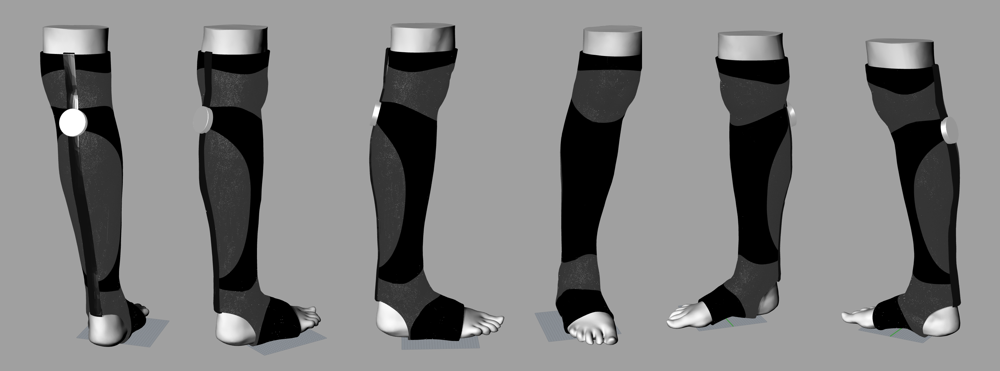

There is an enormous underserved community of people who are developing arthritis,
muscle weakness and reduction in mobility as a result. There is a need for pain
management solutions that can reduce joint pain and aid in muscle movement. Hidden wearable devices
could offer solutions to these problems together, and bring exosuits to the mainstream market.
There are around 200 million people in the US alone that are between the ages of 20-69 that could benefit
from using a passive exosuit, and more than 50 million adults have been diagnosed with some form of arthritis.
By 2040, the number of US adults with doctor-diagnosed arthritis is projected to increase 49percent to 78.4 million (25.9 percent of all adults),
and the number of adults with arthritis-attributable activity limitation will increase 52 percent to 34.6 million (11.4 percent of all adults)
[1].

The combination of a rigid support system and a tensile passive system can increase muscle efficiency, reduce joint pain,
and promote better gait for patients with developing arthritis and decreased mobility. We aim to synthesize the benefits
of orthotics, passive exosuits and compression together by focusing on soft wearable materials. Particularly, by using
auxetic sheets as springs.
Reference Papers:
Auxetics with Tunable Stiffness
Reducing the Energy Cost of Human Walking
Constraints
Elastomers used in vibration and shock isolators generally fall in the range of 35-75 durometer on the Shore A scale -
the use of materials that fall within these ranges for things like shoe soles could provide additional support during
movement by acting as a shock absorber.
Constraints for our problem space are delineated almost entirely by material properties. The auxetic sheet, for example,
has a few tunable parameters that are essential to test and research to achieve similar effects to the CMU paper we have
referenced - the hexagonal cell geometry, material thickness, and material used for casting together determine the spring
constant of the sheet 180 Nm/rad.
Constraints on wearability also command the materials we investigated in this exercise. Because the tensile part of the
exosuit should conform to the human body, rigid materials like springs and clutches cannot be included in the design.
Testing
We conducted experiments with healthy participants (N 5 9) wearing an exoskeleton on each leg while walking at a normal speed (1.25 m s21) on a treadmill. The exoskeleton produced a pattern of torque similar to that produced by the biological ankle, but with lower magnitude (Fig. 2a). This reduced the ankle moment produced by calf muscles (Fig. 2b) and reduced calf muscle activation, particularly in the soleus (Fig. 2c).
It is difficult to attribute changes in whole-body metabolic rate to a particular change in muscle mechanics, but with this device there is an association with reduced muscle forces at the assisted ankle joints. Muscles consume energy whenever active, even when producing force without performing mechanical work. Simply reducing muscle force can therefore save metabolic energy.
